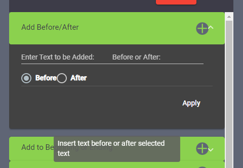
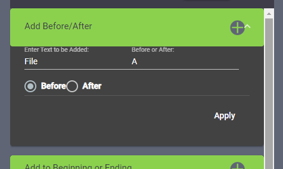
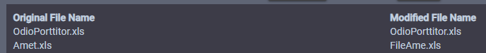

This Tutorials’ goal is to show you how to use rules to change the name of
your files!
First let’s click on a rule, for this example we will be using Add
Before/After.
After doing so you will see the rule expand, with a couple of options. The
options are different for each rule!

You will be able to fill out the rule with your information and hit the
apply button, don’t worry this won’t change your file name yet! It will
apply the rule though!

In this instance, we will be adding the word File before the letter A in the
file names. After hitting apply. You can see your word shown in the
“Modified File Name” column.

You can see an example below, on what the file name was before, and what it
will be like after. Try out many different rules to create the file names of
your dreams! Don’t worry if you mess up you have both an undo button and a
History button! Happy Renaming!